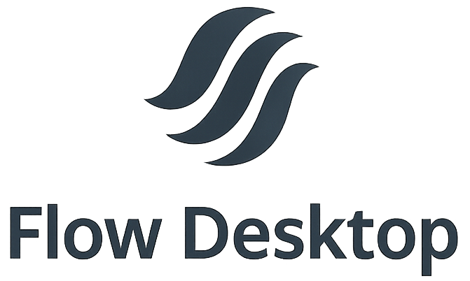

<!DOCTYPE html>
<html lang="en">
<head>
    <meta charset="UTF-8">
    <meta name="viewport" content="width=device-width, initial-scale=1.0">
    <title>Flow Desktop - Lightweight Linux Desktop Environment</title>
    <link href="https://cdn.jsdelivr.net/npm/tailwindcss@2.2.19/dist/tailwind.min.css" rel="stylesheet">
    <link href="https://fonts.googleapis.com/css2?family=Inter:wght@300;400;600;700&display=swap" rel="stylesheet">
</head>
<body>
    <div id="root"></div>

    <script src="https://cdn.jsdelivr.net/npm/react@17.0.2/umd/react.production.min.js"></script>
    <script src="https://cdn.jsdelivr.net/npm/react-dom@17.0.2/umd/react-dom.production.min.js"></script>
    <script src="https://cdn.jsdelivr.net/npm/babel-standalone@6.26.0/babel.min.js"></script>

    <script type="text/babel">
        function Sidebar({ isOpen, toggleSidebar, isCompact, toggleCompact }) {
            return (
                <aside className={`fixed top-0 left-0 h-full ${isCompact ? 'w-20' : 'w-64'} bg-gray-900 text-white transform ${isOpen ? 'translate-x-0' : '-translate-x-full'} md:translate-x-0 transition-all duration-300 z-20`}>
                    <div className="p-4 flex flex-col h-full">
                        <div className="flex items-center justify-between mb-6">
                            {!isCompact && (
                                <h2 className="text-2xl font-bold">Flow Desktop</h2>
                            )}
                            <button
                                onClick={toggleCompact}
                                className="p-2 bg-gray-800 rounded-lg hover:bg-gray-700"
                                title={isCompact ? 'Expand Sidebar' : 'Collapse Sidebar'}
                            >
                                {isCompact ? '>>' : '<<'}
                            </button>
                        </div>
                        <ul className="space-y-2 flex-grow">
                            {['About', 'Features', 'Installation', 'Usage', 'Customization', 'Documentation', 'Contributing'].map((item) => (
                                <li key={item}>
                                    <a
                                        href={`#${item.toLowerCase()}`}
                                        className="flex items-center px-4 py-2 rounded-lg hover:bg-gray-800 transition-colors"
                                        onClick={() => toggleSidebar(false)}
                                    >
                                        <span className="text-lg">{item[0]}</span>
                                        {!isCompact && (
                                            <span className="ml-2">{item}</span>
                                        )}
                                    </a>
                                </li>
                            ))}
                        </ul>
                    </div>
                </aside>
            );
        }

        function Hero() {
            return (
                <section className="relative bg-gradient-to-br from-gray-900 to-blue-900 min-h-screen flex items-center justify-center text-center px-4 pt-16">
                    <div className="relative z-10 max-w-4xl mx-auto">
                        
                        <h1 className="text-5xl md:text-6xl font-bold text-white mb-4">Flow Desktop</h1>
                        <p className="text-xl md:text-2xl text-gray-300 mb-8 max-w-2xl mx-auto">
                            A lightweight, modern Linux desktop environment built with XCB and GTK4 for speed and simplicity.
                        </p>
                        <a
                            href="#installation"
                            className="inline-block bg-green-600 text-white px-6 py-3 rounded-lg font-semibold hover:bg-green-700 transition-all transform hover:-translate-y-1"
                        >
                            Get Started 🚀
                        </a>
                    </div>
                    <div className="absolute inset-0 bg-gradient-radial from-white/10 to-transparent"></div>
                </section>
            );
        }

        function Section({ id, title, children }) {
            return (
                <section id={id} className="py-12 px-4 bg-gray-800 rounded-lg mb-8 mx-4 md:mx-8">
                    <h2 className="text-3xl font-bold text-white mb-6 border-b-2 border-blue-500 pb-2">{title}</h2>
                    {children}
                </section>
            );
        }

        function App() {
            const [sidebarOpen, setSidebarOpen] = React.useState(false);
            const [isCompact, setIsCompact] = React.useState(false);

            const toggleSidebar = (open) => {
                setSidebarOpen(open);
            };

            const toggleCompact = () => {
                setIsCompact(!isCompact);
            };

            return (
                <div className="font-inter text-gray-300">
                    <button
                        className="md:hidden fixed top-4 left-4 z-30 p-2 bg-gray-900 text-white rounded-lg"
                        onClick={() => toggleSidebar(!sidebarOpen)}
                    >
                        {sidebarOpen ? 'Close' : 'Menu'}
                    </button>
                    <Sidebar
                        isOpen={sidebarOpen}
                        toggleSidebar={toggleSidebar}
                        isCompact={isCompact}
                        toggleCompact={toggleCompact}
                    />
                    <Hero />
                    <main className={`max-w-7xl mx-auto py-12 transition-all duration-300 ${isCompact ? 'md:ml-20' : 'md:ml-64'}`}>
                        <Section id="about" title="About Flow Desktop">
                            <p className="mb-4">
                                <strong>Flow Desktop</strong> is a lightweight, modern desktop environment for Linux, built with XCB for X11 and GTK4 for settings and development tools. It integrates seamlessly with the Openbox window manager, offering a minimal yet powerful interface with a customizable taskbar, application launchers, system clock, settings UI, and a code editor for developers.
                            </p>
                            <p className="mb-4">
                                Perfect for low-resource systems or users who love a clean desktop, Flow Desktop combines performance with modern features. Whether you're a developer or a minimalist, Flow Desktop provides a fast, customizable workspace.
                            </p>
                            <h3 className="text-xl font-semibold text-white mt-6 mb-4">Why Choose Flow Desktop?</h3>
                            <ul className="list-disc list-inside space-y-2">
                                <li><strong>Ultra-Lightweight</strong>: Minimal resource usage for older hardware.</li>
                                <li><strong>Modern</strong>: Built with XCB, GTK4, and secure libraries like libgit2.</li>
                                <li><strong>Customizable</strong>: Tweak the taskbar, launchers, and UI via source code.</li>
                                <li><strong>Open Source</strong>: Licensed under GPL v3.0—modify and share freely.</li>
                            </ul>
                        </Section>

                        <Section id="features" title="Features">
                            <ul className="list-disc list-inside space-y-2">
                                <li><strong>Customizable Taskbar</strong>: Adjustable size and position with XCB.</li>
                                <li><strong>Application Menu</strong>: Loads apps from XDG_DATA_DIRS using GDesktopAppInfo.</li>
                                <li><strong>System Clock</strong>: Real-time display with efficient updates.</li>
                                <li><strong>Settings UI</strong>: GTK4-based interface for wallpapers and system info.</li>
                                <li><strong>Flow Builder</strong>: GTK4 IDE with code editor and terminal.</li>
                                <li><strong>Volume Controls</strong>: Keyboard shortcuts for audio adjustments.</li>
                                <li><strong>Wayland Support</strong>: GTK4 components are Wayland-ready.</li>
                            </ul>
                        </Section>

                        <Section id="installation" title="Installation">
                            <h3 className="text-xl font-semibold text-white mb-4">Building from Source</h3>
                            <ol className="list-decimal list-inside space-y-4">
                                <li>Clone the repository:
                                    <pre className="bg-gray-900 p-4 rounded-lg text-sm overflow-x-auto">
                                        <code>git clone https://github.com/superuser-pushexe/Flow-Desktop.git
cd Flow-Desktop</code>
                                    </pre>
                                </li>
                                <li>Set up the build:
                                    <pre className="bg-gray-900 p-4 rounded-lg text-sm overflow-x-auto">
                                        <code>mkdir build && cd build
meson setup ..</code>
                                    </pre>
                                </li>
                                <li>Compile:
                                    <pre className="bg-gray-900 p-4 rounded-lg text-sm overflow-x-auto">
                                        <code>ninja</code>
                                    </pre>
                                </li>
                                <li>Run components:
                                    <pre className="bg-gray-900 p-4 rounded-lg text-sm overflow-x-auto">
                                        <code>startx ./flow
./flow-settings
./flow-builder</code>
                                    </pre>
                                </li>
                            </ol>
                            <p className="mt-4">Ensure Openbox is running before starting <code>flow</code>.</p>
                        </Section>

                        <Section id="usage" title="Usage">
                            <p className="mb-4">Flow Desktop consists of three components:</p>
                            <ul className="list-disc list-inside space-y-2">
                                <li><strong>Taskbar (flow)</strong>: Displays apps, volume controls, and a clock. Use the Super key to open the app menu.</li>
                                <li><strong>Settings (flow-settings)</strong>: Change wallpapers and view system info via a GTK4 UI.</li>
                                <li><strong>Builder (flow-builder)</strong>: Edit code and run commands in a terminal, with automatic program setup.</li>
                            </ul>
                            <h3 className="text-xl font-semibold text-white mt-6 mb-4">Troubleshooting</h3>
                            <ul className="list-disc list-inside space-y-2">
                                <li><strong>Taskbar not showing?</strong> Ensure X11 is running and try <code>startx ./flow</code>.</li>
                                <li><strong>Apps not launching?</strong> Verify <code>.desktop</code> files exist in <code>XDG_DATA_DIRS</code>.</li>
                                <li><strong>Builder errors?</strong> Check <code>libgit2</code> installation.</li>
                            </ul>
                        </Section>

                        <Section id="customization" title="Customization">
                            <p className="mb-4">Customize Flow Desktop by editing the source files and recompiling:</p>
                            <ul className="list-disc list-inside space-y-2">
                                <li><strong>Taskbar</strong>: Modify <code>WIDTH_RATIO</code>, <code>HEIGHT</code> in <code>flow.c</code>.</li>
                                <li><strong>Settings</strong>: Add tabs to <code>flow-settings.c</code>.</li>
                                <li><strong>Builder</strong>: Adjust editor settings in <code>flow-builder.c</code>.</li>
                            </ul>
                            <pre className="bg-gray-900 p-4 rounded-lg text-sm overflow-x-auto">
                                <code>cd build
ninja</code>
                            </pre>
                        </Section>

                        <Section id="documentation" title="Documentation">
                            <p className="mb-4">
                                The <strong>Flow Desktop</strong> codebase is designed for simplicity and extensibility, primarily written in C using XCB for X11 interactions and GTK4 for graphical components. Below is an overview of the code structure and key components to help developers understand and contribute to the project.
                            </p>
                            <h3 className="text-xl font-semibold text-white mt-6 mb-4">Code Structure</h3>
                            <ul className="list-disc list-inside space-y-2">
                                <li><strong><code>src/</code></strong>: Contains the core source files for the desktop environment.</li>
                                <li><strong><code>src/flow.c</code></strong>: Implements the taskbar, including app menu, system tray, and clock, using XCB for rendering and event handling.</li>
                                <li><strong><code>src/flow-settings.c</code></strong>: Defines the GTK4-based settings interface for wallpaper and system configuration.</li>
                                <li><strong><code>src/flow-builder.c</code></strong>: Provides the Flow Builder IDE with a code editor and terminal, leveraging GTK4 and libgit2 for Git integration.</li>
                                <li><strong><code>meson.build</code></strong>: Meson build configuration file specifying dependencies (e.g., XCB, GTK4, libgit2) and build instructions.</li>
                            </ul>
                            <h3 className="text-xl font-semibold text-white mt-6 mb-4">Key Components</h3>
                            <ul className="list-disc list-inside space-y-2">
                                <li><strong>Taskbar</strong>: Built with XCB, it uses <code>XDG_DATA_DIRS</code> to load application <code>.desktop</code> files via GDesktopAppInfo. Customize dimensions in <code>flow.c</code> (e.g., <code>WIDTH_RATIO</code>, <code>HEIGHT</code>).</li>
                                <li><strong>Settings UI</strong>: A GTK4 application with tabs for system settings. Extend functionality by adding new tabs in <code>flow-settings.c</code>.</li>
                                <li><strong>Flow Builder</strong>: A developer-focused IDE with GTK4’s text view for editing and a terminal for commands. Git support is enabled via libgit2.</li>
                                <li><strong>Window Management</strong>: Integrates with Openbox for window dragging, snapping, minimizing (Alt+M), and maximizing (Alt+F).</li>
                            </ul>
                            <h3 className="text-xl font-semibold text-white mt-6 mb-4">Working with the Code</h3>
                            <p className="mb-4">To dive into the codebase:</p>
                            <ol className="list-decimal list-inside space-y-4">
                                <li>Install dependencies: Ensure <code>xcb</code>, <code>gtk4</code>, <code>libgit2</code>, and <code>meson</code> are installed.</li>
                                <li>Build the project:
                                    <pre className="bg-gray-900 p-4 rounded-lg text-sm overflow-x-auto">
                                        <code>cd Flow-Desktop
mkdir build && cd build
meson setup ..
ninja</code>
                                    </pre>
                                </li>
                                <li>Explore <code>src/</code> to modify components. For example, adjust taskbar behavior in <code>flow.c</code> or add settings in <code>flow-settings.c</code>.</li>
                                <li>Test changes by running <code>./flow</code>, <code>./flow-settings</code>, or <code>./flow-builder</code> from the build directory.</li>
                            </ol>
                            <p className="mt-4">
                                For detailed API documentation, refer to the <a href="https://xcb.freedesktop.org/" className="text-blue-400 hover:underline">XCB documentation</a> and <a href="https://docs.gtk.org/gtk4/" className="text-blue-400 hover:underline">GTK4 documentation</a>. Contribute improvements via GitHub pull requests, following the guidelines in the Contributing section.
                            </p>
                        </Section>

                        <Section id="contributing" title="Contributing">
                            <p className="mb-4">We welcome contributions to Flow Desktop! To contribute:</p>
                            <ol className="list-decimal list-inside space-y-4">
                                <li>Fork the repository on <a href="https://github.com/superuser-pushexe/Flow-Desktop" className="text-blue-400 hover:underline">GitHub</a>.</li>
                                <li>Clone your fork:
                                    <pre className="bg-gray-900 p-4 rounded-lg text-sm overflow-x-auto">
                                        <code>git clone https://github.com/your-username/Flow-Desktop.git</code>
                                    </pre>
                                </li>
                                <li>Create a branch:
                                    <pre className="bg-gray-900 p-4 rounded-lg text-sm overflow-x-auto">
                                        <code>git checkout -b feature/your-feature</code>
                                    </pre>
                                </li>
                                <li>Commit and push:
                                    <pre className="bg-gray-900 p-4 rounded-lg text-sm overflow-x-auto">
                                        <code>git commit -m "Add feature: description"
git push origin feature/your-feature</code>
                                    </pre>
                                </li>
                                <li>Submit a pull request.</li>
                            </ol>
                        </Section>
                    </main>
                    <footer className="bg-gray-900 text-gray-400 py-8 text-center">
                        <p>© 2025 Flow Desktop by superuser-pushexe. GPL v3.0 License.</p>
                        <div className="mt-4 space-x-4">
                            <a href="https://github.com/superuser-pushexe/Flow-Desktop" className="text-blue-400 hover:underline">GitHub</a>
                            <a href="mailto:fullynerfed@mailfence.com" className="text-blue-400 hover:underline">Contact</a>
                        </div>
                    </footer>
                </div>
            );
        }

        ReactDOM.render(<App />, document.getElementById('root'));

        // Custom styles
        const style = document.createElement('style');
        style.innerHTML = `
            @keyframes float {
                0% { transform: translateY(0); }
                50% { transform: translateY(-10px); }
                100% { transform: translateY(0); }
            }
            .animate-float {
                animation: float 3s ease-in-out infinite;
            }
            .font-inter {
                font-family: 'Inter', sans-serif;
            }
            .bg-gradient-radial {
                background: radial-gradient(circle, rgba(255, 255, 255, 0.1) 0%, transparent 70%);
            }
        `;
        document.head.appendChild(style);
    </script>
</body>
</html>
